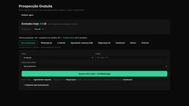
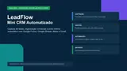
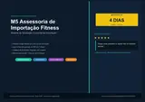
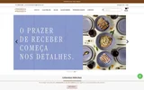
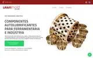
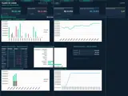
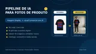
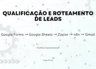
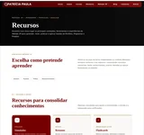

Catálogo completo — projetos reais entregues a clientes e demonstrações práticas do método de trabalho.

Produto próprio Motor de prospecção outbound com IA — leads a mensagem enviada, sozinho Encontra negócios sem presença digital, escreve abordagem única por lead e acompanha o pipeline até o fechamento, com dashboard de conversão e custo. → 03 Produto próprio Atendimento automático no WhatsApp com IA — decisões técnicas API oficial da Meta, validação de assinatura timing-safe, idempotência por mensagem e cascata de modelos com fallback. Sem lead registrado ainda — case documenta arquitetura, não volume. → 04
Real Mini CRM que organiza e acompanha leads automaticamente Do formulário ao fechamento: pipeline visual, follow-up e avisos por e-mail rodando sozinhos — sem perder lead em planilha manual. → 05
Real Simulador de importação que calcula tributos e gera PDF em 1 clique Acabou com a cotação manual: cálculo automático de impostos, catálogo de fornecedores integrado e proposta em PDF gerada na hora. → 06 Real Site institucional para psicóloga — design acolhedor e depoimentos autogerenciáveis WordPress com Gutenberg nativo, identidade visual própria e carrossel de depoimentos que a cliente atualiza sozinha via REST API. → 07 Real Site institucional e catálogo para empresa de agronegócio Fertilizantes reaproveitáveis e equipamentos agrícolas: catálogo com galeria, seção própria de equipamentos e contato via WhatsApp. → 08 Real Site multi-página para corretora de seguros e planejamento financeiro Seguros pessoais, consórcios, benefícios empresariais e proteção patrimonial, com consultoria via WhatsApp integrada. → 09 Real Site premium para nutricionista — design autoral e agendamento direto Identidade visual própria, dois fluxos de agendamento (presencial e online) direto pelo WhatsApp e carrossel de depoimentos de pacientes. → 10 Real Migração de e-commerce Wix → Nuvemshop para joalheria Saída de site builder genérico para plataforma de e-commerce nativa: cadastro de produto por lote, controle de estoque por peça e parcelamento por faixa de preço. → 11
Real Migração de e-commerce Odoo → Nuvemshop para cerâmica artesanal Saída de um ERP genérico (Odoo) para plataforma de e-commerce nativa: catálogo por categoria, filtro por cor e kits combinados com preço fechado. → 12 Real Site institucional para empresa de software ERP/CRM — duas páginas de produto completas Duas páginas de produto dentro da mesma instalação WordPress: ERP (PDV, estoque, financeiro, emissão fiscal, compras e cadastro de clientes) e CRM Automação (leads, pipeline, agenda e automação), cada uma com hero, integrações, segurança e segmentos atendidos. → 13 Real Site de lançamento de livro — identidade própria e presença digital da autora Página de promoção de livro com paleta autoral (rose, marsala e ouro), apresentação da obra e da autora e canal direto pra compra. → 14 Real Manutenção de e-commerce — correção de bugs no carrinho de compras Diagnóstico e correção de falhas no fluxo de carrinho de loja virtual em produção, sem parar a operação. → 15 Real Correção de site existente — loja WooCommerce de móveis antigos restaurados Entrada em site WordPress/WooCommerce já em produção pra resolver problemas técnicos reportados pela cliente, sem interromper a operação da loja. → 16 Real Site institucional com loja virtual para vestuário esportivo WordPress com WooCommerce: catálogo com filtro de produtos, área de conta do cliente e página de contato com localização, WhatsApp e formulário. → 17
Real Landing page industrial para fabricante de componentes autolubrificantes Página única focada em cotação técnica: benefícios do produto, carrossel de portfólio com fotos reais de peças e bloco de contato com endereço e WhatsApp comercial. → 18 Real Site para loja de autopeças — conversão direta em WhatsApp Página única sem catálogo navegável: diferenciais da loja (peça nova e usada, atendimento direto, desconto de banco parceiro) levando o visitante direto pro orçamento via WhatsApp. → 19 Real Página pública de plataforma de gestão de atestados médicos Apresentação institucional de plataforma de absenteísmo: validação de CRM, cruzamento de CID com CNAE/NTEP, alertas de recorrência e dashboards para RH. → 20
Real Planilhas financeiras com dashboard — fluxo de caixa e precificação Sistema em Excel com 24 meses de fluxo de caixa, dashboards com gráficos, folha com encargos, três módulos de precificação, DRE e simulação de cenários. → 21 Demo Landing page para studio de design de sobrancelhas — agendamento direto pelo WhatsApp Landing institucional com paleta quente pro nicho de beleza: serviços com preços, galeria, depoimentos e botão que abre o WhatsApp com a mensagem de agendamento pronta. → 22 Demo Landing page para ateliê de nail design — vitrine de serviços e agenda via WhatsApp Landing com identidade cereja/rosé pro universo das unhas: tabela de serviços, galeria de trabalhos, prova social e agendamento em um clique pelo WhatsApp. → 23
Conceito SaaS que transforma fotos simples de produto em imagens de catálogo Login, geração por IA e pagamento integrado — produto fullstack construído do zero para validar a ideia ponta a ponta. → 24 Demo Captação de clientes via WhatsApp para barbearia local Landing page otimizada para transformar visitas em agendamentos reais — serviços, preços e botão direto pro WhatsApp. → 25 Demo Briefings de conteúdo gerados por IA em segundos Do formulário ao documento pronto: a IA estrutura o briefing, cria o arquivo e avisa o time — sem digitação manual. → 26
Demo Triagem automática que envia cada lead ao vendedor certo Classifica os contatos por prioridade e encaminha na hora — acaba com lead parado na fila e resposta lenta. → 27 Demo Captura e controle de leads sem mensalidade de software Histórico de contatos, próxima ação e alertas automáticos dentro de uma planilha — organização comercial sem custo fixo. → 28
Real Plataforma de cursos com área de membros e certificação automática — formação PMI WordPress + Tutor LMS (versão gratuita): curso com aulas, avaliação com registro de tentativas, certificado emitido automaticamente com código de validação pública, e controle de acesso por prazo. → 29 Demo Acompanhamento automático de propostas enviadas Lembretes disparados sozinhos para que nenhuma proposta esfrie sem resposta — nenhum cliente esquecido. →